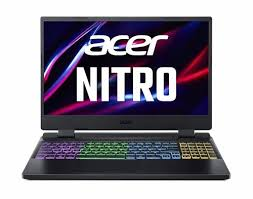
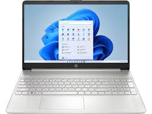

Laptops confiables y servicio técnico en Tacna
“Venta de laptops, reparación especializada y envíos locales el mismo día.”
“Venta de laptops, reparación especializada y envíos locales el mismo día.”
TacnaTech Express nació en 2019 con un objetivo claro: ofrecer laptops confiables
y servicio técnico rápido para la comunidad de Tacna.
Su fundador, un técnico local apasionado por la informática, notó que muchas personas
debían esperar semanas para reparar sus equipos o comprar tecnología con soporte confiable.
Lo que empezó como un pequeño taller se convirtió en una tienda tecnológica enfocada
en atención cercana, soluciones rápidas y tecnología accesible para todos.


Potente rendimiento para juegos exigentes.

Diseño delgado y rendimiento eficiente para profesionales.
Ideal para tareas diarias y estudio con excelente relación calidad-precio.
Entrega rápida y segura en Tacna para tus compras.